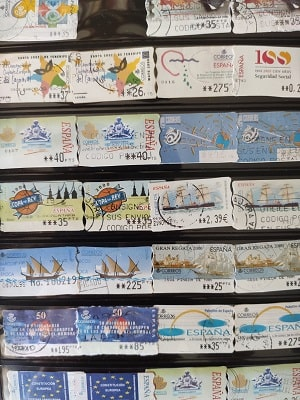
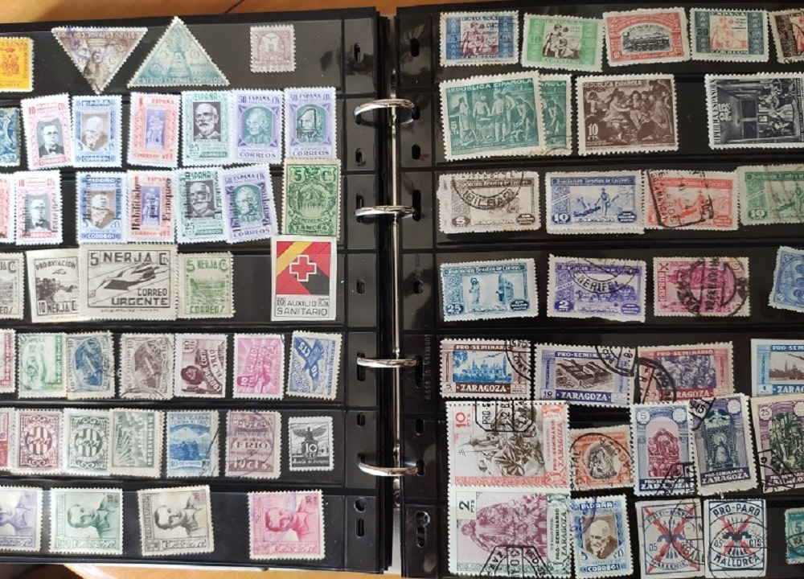

Con el transcurso de los años el interés por los sellos ha ido bajando hasta el punto de que lo que parecía valor seguro hace 30 años hoy en día ha visto caer el precio hasta limites insospechados por aquel entonces.
Es ahora cuando desde hace unos cinco años esta volviendo cierto interes ante la caída de los precios. Grandes coleccionistas aprovechan esta coyuntura para completar colecciones y conseguir sellos que antaño parecía muy dificil. Si bien, el precio actual de mercado esta influenciado ante la facilidad con la que hoy en día se puede falsificar los materiales. Pero para que una falsificación sea tan buena que pueda suplantar el original se necesita mucha inversión y hoy en día ni siquiera esa inversión es rentable por la escasa demanda en adquirir sellos de alto valor.
Por si fuera poco muchas de las generaciones que coleccionaron sellos se encuentran ahora mayores y quieren deshacerse de los sellos para poder terminar sus años de una manera más cómoda.
Es ahí donde están surgiendo las verdaderas gangas ya que los profesionales que compran no ofrecen siquiera la suma que costo en aquel entonces adquirirlos. Estos para poder pagar estas colecciones venden sus sobras en el internet o en las plazas de los pueblos o ciudades a precios muy bajos.
Sin duda cuando termine esta burbuja por debajo, y empiece a haber mercado fuera de España en aquellos países emergentes que hoy en día son grandes potencias como India y China, todos estos sellos volverán a ocupar su lugar y serán absorvidos por gente de fuera. Ya que las clases medias y media altas crecen a buen ritmo. España al ser un país tan famoso fuera de nuestras fronteras y tener tan poca población, tiradas de un millón de sellos pasarán de ser grandes tiradas a ultracortas. Todo llegará y hay habrá que estar esperando el momento....
El término sello (del latín sigillum) (en algunos países también llamado timbre) se aplica, por un lado, para nombrar el instrumento con imágenes grabadas que, a través de la impresión de tinta sobre el papel, se utiliza para autorizar documentos. Por otro lado, también se llama sello la impresión que resulta del uso de ese instrumento, generalmente al lado de una o más firmas.
Su empleo se remonta a las antiguas civilizaciones de la Mesopotamia (sellos cilíndricos) y el Antiguo Egipto (escarabeos y sellos cilíndricos).
El tipo de sellos que nosotros estamos más familiarizados es el sello postal que es el que trataré a continuación.
[Fuente: WIKIPEDIA]
La emisión del primer sello postal se enmarca dentro de una profunda reforma del servicio de correos británico emprendida por James Chalmers (1834) y Rowland Hill (1837). Hasta entonces el envío lo pagaba el destinatario en función de los kilómetros recorridos y no por su peso. Hill propuso que el envío lo pagara el remitente según una tarifa uniforme en función del peso y no por el kilometraje.
Anteriormente los sellos postales solían llevar un grabado del emisor del sello en el que contenía el lugar de la procedencia del envío y se añadía la fecha del envío. Además solían llevar grabada la tasa del que realizaba los envíos con su correspondiente impuesto.
Esto viene a decir que se normalizo una moneda solamente para pagar los envíos. De ahí que hubiera una regulación grande y que se pasará a realizar todo este proceso desde la administración central. En el caso de España desde la Fabrica de Moneda y timbre. Y es que los sellos nuevos tendrían el mismo valor que una moneda si bien se limita el uso a una misma finalidad. A día de hoy no es posible pagar en sellos los bienes normales así como no es posible pagar con criptomonedas.
Los sellos una vez pasado un tiempo empezó a haber gente que almacenaba los sellos y los coleccionaba y se comenzó a especular con el valor en cierta medida ya que había unos sellos que se emitían en grandes cantidades y otros en muy pocas. De ahí surgiría la filatelia.
 De aquí cabría resaltar que tanto el dentado como el centrado influye mucho en el precio final del sello a coleccionar. A veces es casi del 50%, en sellos que suelen estar descentrados el centrado se considera raro de ahí que tenga más valor.
De aquí cabría resaltar que tanto el dentado como el centrado influye mucho en el precio final del sello a coleccionar. A veces es casi del 50%, en sellos que suelen estar descentrados el centrado se considera raro de ahí que tenga más valor.
No es cierto que haya que llegar al 50% pero el vendedor intentará aplicar este porcentaje basándose en el catálogo oficial de precios para la serie correspondiente.
Las sobrecargas suelen estar cotizadas en el catálogo de sellos siendo series diferentes las sobrecargadas y las que no. Esto cuando es una sobrecarga oficial ya que si no lo es el sello habrá perdido su valor pudiéndose considerar matasellado. Y es que los sellos matasellados por lo general bajan el precio del sello entorno a un 90%.
Aunque como todo si el sello es muy escaso ya sea matasellado o no tendrá un valor intrínseco.
Otro factor a tener en cuenta es si es un sello que por error haya sido imprimido diferente de la serie original. Estos sellos suelen ser escasos ya que en seguida se corrige la falla en la imprenta y por ello valen muchísimo más que los originales.
Como ejemplo cabe resaltar el fallo hace un año en la que en el sello de León aparecía la catedral de Burgos. Esto sería aprovechado por multitud de especuladores para hacerse con todos los que recogían el error.
Últimamente se ha perdido bastante interes por los sellos, y existen multitud de personas interesadas en deshacerse de sus colecciones. Esto es debido a que la gente que empezó a coleccionar sellos sería en los años 50-60. Esta gente esta ya muy mayor y muchos quieren disfrutar de su inversión. Sin embargo los sellos están en declive, su uso es testimonial y se limita casi a los envíos de paquetería porque el envío de cartas con las nuevas tecnologías ha desaparecido casi por completo. Si acaso gente con tradición de mandar christmas en navidad suele comprar sellos.
A esto se le añade los sellos ATM que son etiquetadas franqueadoras por correos en los que el valor del envío se imprime en el momento de matasellarlo. Estos sellos también se coleccionan y su uso es desde 1991 con lo que existen todavía muy pocas etiquetas diferentes si bien las tiradas han sido muy grandes, por lo que el valor es bien poco.
En la imagen de la derecha se muestran varias de estas etiquetas. En el caso de la izquierda una serie de medios de transporte que sacaron a posteriori ya que las primeras se basaban unicamente en el logo de correos y no se pensaba en hacerlas exponiendo nada.
Más tarde se agruparían en series con algún motivo ya sean medios de transporte, animales, lienzos, etc.
El uso de etiquetas haría menor la demanda de sellos y para ajustar oferta y demanda se realizarían tiradas más cortas. Esto es un punto a favor de los sellos modernos que son más escasos y sobre todo se han usado menos por lo que un sello moderno incluso matasellado vale más que un sello de 4 décadas atrás.


 Los sellos más comunes son los de la cara del mandatario, Franco y Juan Carlos I y de valor nominal bajo. Si bien hay alguna excepción con una serie de colores que fueron tiradas más cortas que otras. A continuación muestro la tirada completa de los sellos del rey Juan Carlos de finales de los 70s.
Los sellos más comunes son los de la cara del mandatario, Franco y Juan Carlos I y de valor nominal bajo. Si bien hay alguna excepción con una serie de colores que fueron tiradas más cortas que otras. A continuación muestro la tirada completa de los sellos del rey Juan Carlos de finales de los 70s.
También muestro otros sellos de esa década como son la de soldados que su valor es escaso también por la gran tirada de los mismos.
Además desde los años 80s existe la tendencia a realizar láminas completas que aglutinen una serie completa. En coleccionismo si estos vienen sin separar el precio es mayor.
Un timbre de ingresos, de impuesto o fiscal (del francés, timbre, sello) es una etiqueta adhesiva habitualmente utilizada para recoger impuestos o costes en documentos, tabaco, bebidas alcohólicas, fármacos y medicinas, cartas de juego, licencias de caza, licencias de armas de fuego, y muchos otras cosas.
Los timbres fiscales son sellos utilizados para recolectar impuestos y pagos. El gobierno es el encargado de emitirlos, sean nacionales o locales, así como los cuerpos oficiales de varias clases. Tienen muchas formas y pueden ser adhesivos o no, perforados o no, impresos o en relieve, y de cualquier medida.
En muchos países, son tan detallados en su diseño como los billetes y son a menudo hechos del mismo tipo de papel. El alto valor de muchos timbres fiscales significa que pueden contener dispositivos de seguridad para impedir falsificaciones.
Estos sellos eran ampliamente utilizados en sus orígenes existiendo mucha variante. Existen catálogos especializados en este tipo de sellos. En un principio se coleccionaban como el resto de los sellos pero después pasaría a estar fuera del catálogo oficial.
Los sellos de la derecha forman parte de mi colección y tengo algunas réplicas de sellos en papel antiguos de los primeros fiscales (1870 en adelante) con la alegoría de la república como los de la otra lámina. En esos hay desde tiempos de Alfonso XII y Alfonso XIII hasta los de Franco con el Yugo y las flechas.

Estos sellos junto con los fiscales estarían fuera del catálogo y formarían parte los de telégrafos. Con el tiempo han ido recobrando importancia y valor como una muestra de nuestra historia.
 En el siglo XIX España aún tenía territorios de ultramar como Cuba y Filipinas y alguna isla más y parte del norte de Africa. En estos territorios se emitiría sello español. Las últimas colonias en perderse serían el norte de Marruecos, Ifni y Fernando Poo que lo harían en tiempos de Franco con la famosa marcha verde. A partir de que se dejaran de emitir sellos cobrarían más valor si bien debido a las grandes tiradas de los últimos sellos sólo los anteriores a 1930 tienen verdadero valor.
En el siglo XIX España aún tenía territorios de ultramar como Cuba y Filipinas y alguna isla más y parte del norte de Africa. En estos territorios se emitiría sello español. Las últimas colonias en perderse serían el norte de Marruecos, Ifni y Fernando Poo que lo harían en tiempos de Franco con la famosa marcha verde. A partir de que se dejaran de emitir sellos cobrarían más valor si bien debido a las grandes tiradas de los últimos sellos sólo los anteriores a 1930 tienen verdadero valor.
A continuación mostrare sellos de Ifni(0,10€ unidad, 0,30€ catalogo)sin gran valor filatélico y otros de Marruecos que tienen bastante más (1-10€ unidad).
 >Estos sellos al ser los primeros del catálogo EDIFIl son los que más valor tienen. Un sello de Isabel II de alto valor fácial (reales o escudos), puede costar una fortuna (de 1000 a 20000€).
Si bien es bastante improbable que se cuente con ellos ya que estos sellos sólo se suelen ver en subastas. Son falsificables ya que si renta realizar una copia minuciosa por eso es mejor evitar coleccionar estas reliquias.
>Estos sellos al ser los primeros del catálogo EDIFIl son los que más valor tienen. Un sello de Isabel II de alto valor fácial (reales o escudos), puede costar una fortuna (de 1000 a 20000€).
Si bien es bastante improbable que se cuente con ellos ya que estos sellos sólo se suelen ver en subastas. Son falsificables ya que si renta realizar una copia minuciosa por eso es mejor evitar coleccionar estas reliquias.
Sobre todo en estado nuevo. Recordemos que 8 escudos antiguamente serían hoy de unos 600€ a 1200€ al cambio. 8 escudos sería el equivalente a 200 pesetas antiguas. Si trazas la analogía y sumas la inflación desde entonces hayaras la equivalencia. 4 reales era lo mismo que 1 peseta y 1 real lo equivalente a 34 maravedies (6 maravedies de a 8) que ya explicare cuando hable del sistema monetario español y de su historia. Así las cosas una peseta de hace 200 años sería muchísimo más que 50 euros de hoy. En cambio con Alfonso XIII ya se reduciría la diferencia en 4 o 5 veces debido a la inflación.
De estos sellos lo mejor es tener las series bajas que equivalían a céntimos y son bastante baratos porque las tiradas eran grandes. Un sello perfecto de tiradas bajas podría salir por 0.30€ para que nos hagamos una idea.
Respecto a los sellos de Alfonso XII y Alfonso XIII el valor baja bastante con respecto a Isabel II y por poco más de 100 euros puedes obtener la serie completa en nuevo de los últimos y en usado de los primeros.
Estos sellos forman parte de los primeros 300 del catálogo de España que hoy en día 2019 cuenta con más de 5000.
A continuación muestro algunos de mi colección:
Estos sean quizás los sellos más bonitos de toda la colección de sellos. Es el tiempo donde se habría alcanzado gran maestría en el dibujado y la impresión a la vieja usanza y los motivos que se ilustran forman parte de lo mejor de la cultura española (pintura Goya, descubrimiento de América, Cervantes, catedrales, etc ).
Su valor a día de hoy esta entre los 20€ y los 300€ para muchos de la serie en el catálogo oficial si bien debido al desinterés por comprar estos artículos están bajando hasta poder comprarse hasta 1/4 del valor oficial del catálogo o incluso menos.


Los más caros son la serie de ferrocarriles o la de aviones con precios de hasta 800€ por una serie en perfectas condiciones ( buen centrado, con mucho color, goma y sin fijasellos).
Aquí muestro algunos de mi posesión. Están entre el 400 y 600 de la numeración EDIFIL.

En la guerra civil española hubo multitud de sellos con un período muy pequeño de uso y de diferentes regiones españolas. Además al haber dos bandos en la guerra cada uno tenía sus propias imágenes en los sellos. Las tiradas fueron tan cortas que tienen algunos mucho más valor que los de Alfonso XIII. Si bien la calidad del sello deja mucho que desear.
En el bando republicano se hace referencia mucho a los valores de la república y a la imagen de la alegoría de la república. Las imágenes de los presidentes y políticos en funciones. En el bando nacional las odas a España y el tono patriótico es lo que más se menciona. También imágenes con alta connotación católica.
A partir de la guerra civil los sellos no tienen apenas valor salvo contadas excepciones con tiradas ultracortas como las de Legazpi y Sorolla que rondan los 300€ en valor oficial si bien no es dificil obtenerlos por unos 30€.
Es por ello que no recomiendo en absoluto registrarse en la sociedad filatélia española y pagar los 40€ por conseguir el año completo ya que los sellos de hoy jamás se revalorizaran. Todo lo contrario en unos años se podrán conseguir al mismo precio de entonces y con la subida de la inflación estarás perdiendo dinero.
Solo es recomendable hacerse con series antiguas ya que la mayoría de las tiradas de estas series no sobrepasan las 300.000 unidades y llegará un día que el propio interés de los nuevos países emergentes como China o India con millones de personas, y cientos de miles ricos harán que estos sellos puedan subir bastante por su escasez.
Por último haré mención a los sellos de otros países. Normalmente si empiezas a coleccionar sellos es normal ir por los de tu país y después si hay algo de interés o si se te presenta una buena oportunidad hacerte con algunos de países de tu entorno. En las imágenes de la derecha se muestran sellos de Italia de los primeros del catálogo con el rey Humberto I y los de Portugal. El precio de los sellos en estos países es bastante inferior a la colección española. Si bien tienen algunas tiradas bastante cortas que nuevos cuestan una fortuna.
Para saber el precio existen multitud de catálogos de los que destaca YVERT & TELLIER.. Este catálogo contiene todos los sellos existentes en el mundo. Debido a la múltitud de información cuenta con varios tomos y es bastante caro si compras una versión actualizada. Si bien en internet podemos hacernos con algún catalogo desfasado por una fracción del precio de nuevo.

 A continuación muestro algunos de imperio alemán, algunos de la antigua Alemania que estaba separado en estados independientes. Esos sellos de los estados están muy valorados. En mi caso solo poseo tres o cuatro que son los de la fila primera.
A continuación muestro algunos de imperio alemán, algunos de la antigua Alemania que estaba separado en estados independientes. Esos sellos de los estados están muy valorados. En mi caso solo poseo tres o cuatro que son los de la fila primera.
En mi caso me hice con varios de nuestros países vecinos como Francia, Portugal, Italia y Alemania. Y algún otro país de lo que tengo algunos sellos.
Es remarcable los sellos del imperio alemán tras la primera guerra mundial con la república de Weimar" en como fueron escalando del precio hasta que un sello podría valer varios millones de Marcos.
Debajo muestro como son los sellos con el nominal más alto que he visto valor de mil millones que se traduce en millarden. Estos sellos se utilizarían muy poco ya que forman parte de los últimos meses de la gran crisis de escasez y su uso sería anecdótico.


 Más tarde me haría con una buena colección de sellos de distintos países de Sudamérica. A la derecha muestro series de los más antiguos de México y algunos no tan antiguos. En especial, vale la pena hacerse con sellos antiguos y no nuevos. Los sellos nuevos están sobrevalorados y no sirve de nada como fuente de inversión al igual que con los sellos españoles. Ahora mismo hay multitud de ventas con algunos de estos sellos a un precio bastante bueno en comparación con el valor que pueden tener atendiendo a la tirada y la condición en la que se encuentran. Es por ello un buen mercado para el que entienda. Eso sí, no invirtiendo más de un euro por sello y intentando que sea a un 10%-20% del valor de los catálogos.
Más tarde me haría con una buena colección de sellos de distintos países de Sudamérica. A la derecha muestro series de los más antiguos de México y algunos no tan antiguos. En especial, vale la pena hacerse con sellos antiguos y no nuevos. Los sellos nuevos están sobrevalorados y no sirve de nada como fuente de inversión al igual que con los sellos españoles. Ahora mismo hay multitud de ventas con algunos de estos sellos a un precio bastante bueno en comparación con el valor que pueden tener atendiendo a la tirada y la condición en la que se encuentran. Es por ello un buen mercado para el que entienda. Eso sí, no invirtiendo más de un euro por sello y intentando que sea a un 10%-20% del valor de los catálogos.
Yo por ello en estos casos solo invierto en sellos usados ya que a mi modo de ver en varios años la diferencia entre los nuevos y usados disminuirá.
La clave es también usarlo como diversificación de nuestro capital a largo plazo no debiendo superar en ningún caso el 2% del mismo.

 A continuación una muestra de los sellos de Uruguay antiguos que poseo que me hice a buen precio. No habiendo gastado más de 20 euros por unos sellos que a precios de catalogo podrían rondar los 200 euros.
A continuación una muestra de los sellos de Uruguay antiguos que poseo que me hice a buen precio. No habiendo gastado más de 20 euros por unos sellos que a precios de catalogo podrían rondar los 200 euros.
Por otra parte muestro una lamina de sellos de las islas de Bermudas. Hay muchos pequeños estados que emiten una gran cantidad de sellos y que en vive el estado en parte de la filatelia ya que en el mundo hay una gran cantidad de gente que colecciona todos los sellos del mundo. Eso es atractivo ya que cada año solo con la emisión de sellos para esta demanda de fuera el estado gana muchísimo dinero. Yo cuento con muchos sellos pero usados cuyo valor es muy relativo. Para nada aconsejo comprar sellos nuevos de estas pseudoestados o paraísos fiscales como Bermuda, islas Caimán, Antigua, etc. Solo como comentario de que hay países que les reportan grandes cantidades de dinero.
Por último añadir que cuento con álbumes excedentes de mis compras que vendo a muy buen precio. El sello usado en torno a 0.03€-0.05€ en paquetes de 1000 sellos añadiendo el álbum donde se encuentra. Si estáis interesados mandad un correo a mi dirección o en la misma wallapop.
MI tienda en wallapop
EJEMPLO DE ALBUM QUE VENDO.
Usando este sitio web aceptas nuestros Terminos y condiciones. Por favor Aceptar esto antes de usar el sitio web.
© 2016 - All Rights Reserved - Diseñada por Sergio López Martínez
El sitio se mantiene gracias a la publicidad, por favor Desactiva Adblock para seguir navegando
He desactivado Adblock![[Valid RSS]](https://www.feedvalidator.org/images/valid-rss-rogers.png "Validate my RSS feed")